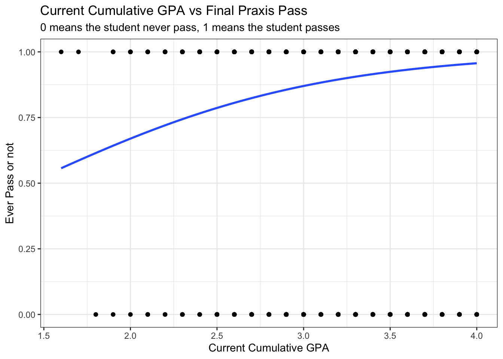
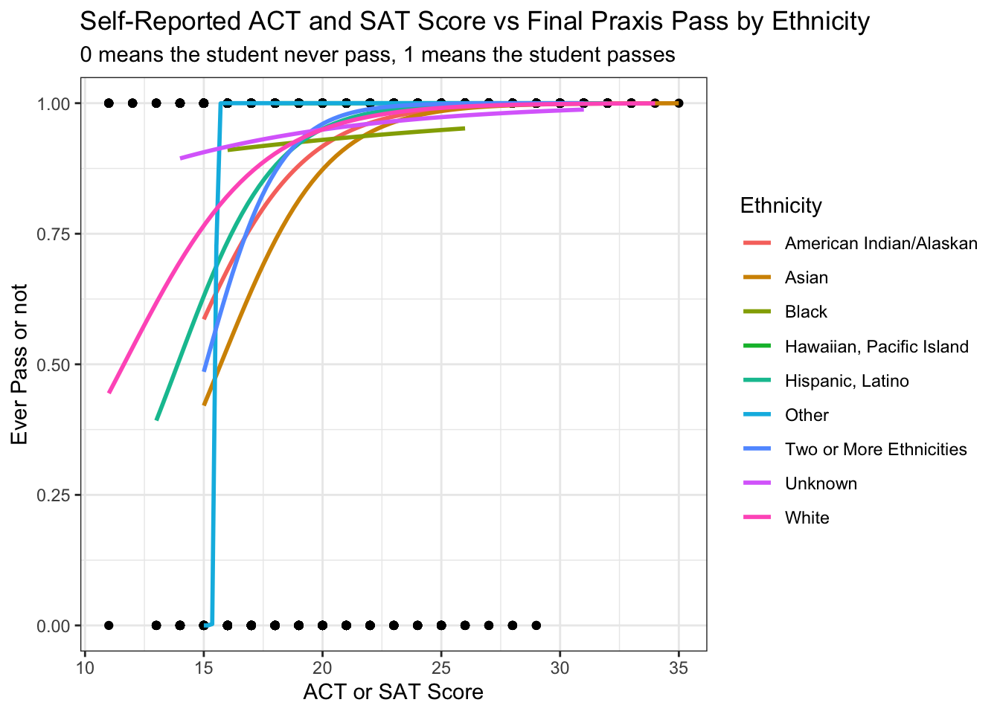

Logistic & Multiple Linear Regression Model for Praxis Scores
portfolio
Author
Alice Pao
Published
March 6, 2024
This post is to showcase my statistical analyses for praxis scores collected from students majoring in teacher education at an Idaho higher education institution. This project is part of Benjamin Pacini’s dissertation.
The two research questions we are trying to answer are: 1. What predicts strong teaching? 2. How do measures of success correlate with each other?
In the attempt to answer these two questions, I run logistic and multiple linear regression models using the praxis data set I got. (for its data cleaning and transformation process, please refer to my other blog post)
What Predicts Strong Teaching?
For the following regression models, the target(y) will be different results for praxis scores and the features(x) will be different student demographics.
Regression 1: Target is if a student ever pass praxis test. 0 means fail and 1 means pass.
# 1: Logistic Regression Model # Logistic Regression Model: Ever Pass vs CurrentCumGPApraxis_ever_pass <- praxis %>%select(student_id, ever_pass) %>%mutate(student_id =as.character(student_id))praxis_ever_pass <-inner_join(praxis_ever_pass, demo, by =c("student_id"="StudentID"))praxis_ever_pass <- praxis_ever_pass %>%select(ever_pass:`Teaching Content`)glm_ever_pass_gpa <-glm(ever_pass ~ CurrentCumGPA, data = praxis_ever_pass, family = binomial)summary(glm_ever_pass_gpa)
Call:
glm(formula = ever_pass ~ CurrentCumGPA, family = binomial, data = praxis_ever_pass)
Deviance Residuals:
Min 1Q Median 3Q Max
-2.8202 0.2099 0.2637 0.3305 1.0686
Coefficients:
Estimate Std. Error z value Pr(>|z|)
(Intercept) -2.20309 0.29491 -7.47 7.99e-14 ***
CurrentCumGPA 1.54026 0.08969 17.17 < 2e-16 ***
---
Signif. codes: 0 '***' 0.001 '**' 0.01 '*' 0.05 '.' 0.1 ' ' 1
(Dispersion parameter for binomial family taken to be 1)
Null deviance: 5048.5 on 13300 degrees of freedom
Residual deviance: 4770.3 on 13299 degrees of freedom
(85 observations deleted due to missingness)
AIC: 4774.3
Number of Fisher Scoring iterations: 6
Code
ggplot(data = praxis_ever_pass, aes(x=CurrentCumGPA, y = ever_pass))+geom_point()+geom_smooth(method ="glm", method.args=list(family=binomial), se=FALSE)+theme_bw()+labs(title ="Current Cumulative GPA vs Final Praxis Pass", subtitle ="0 means the student never pass, 1 means the student passes", y ="Ever Pass or not", x ="Current Cumulative GPA" )

Code
# Logistic Regression Model: Ever Pass vs CurrentCumGPA & Ethnicityglm_ever_pass_ethnicity <-glm(ever_pass ~ CurrentCumGPA*Ethnicity, data = praxis_ever_pass, family = binomial)summary(glm_ever_pass_ethnicity)
Call:
glm(formula = ever_pass ~ CurrentCumGPA * Ethnicity, family = binomial,
data = praxis_ever_pass)
Deviance Residuals:
Min 1Q Median 3Q Max
-2.8694 0.2118 0.2473 0.3364 1.0951
Coefficients:
Estimate Std. Error z value
(Intercept) -3.8225 3.1452 -1.215
CurrentCumGPA 1.8707 0.9806 1.908
EthnicityAsian 1.7404 3.7353 0.466
EthnicityBlack 5.0966 4.3881 1.161
EthnicityHawaiian, Pacific Island 3.0035 7.8396 0.383
EthnicityHispanic, Latino 2.7644 3.2461 0.852
EthnicityOther -1.4473 8.6368 -0.168
EthnicityTwo or More Ethnicities 1.8387 3.4166 0.538
EthnicityUnknown -1.4101 4.2284 -0.333
EthnicityWhite 1.6388 3.1635 0.518
CurrentCumGPA:EthnicityAsian -0.5988 1.1448 -0.523
CurrentCumGPA:EthnicityBlack -1.6167 1.3458 -1.201
CurrentCumGPA:EthnicityHawaiian, Pacific Island -0.6960 2.3157 -0.301
CurrentCumGPA:EthnicityHispanic, Latino -0.8913 1.0114 -0.881
CurrentCumGPA:EthnicityOther 0.5723 2.5138 0.228
CurrentCumGPA:EthnicityTwo or More Ethnicities -0.6789 1.0668 -0.636
CurrentCumGPA:EthnicityUnknown 0.4899 1.3052 0.375
CurrentCumGPA:EthnicityWhite -0.2996 0.9860 -0.304
Pr(>|z|)
(Intercept) 0.2242
CurrentCumGPA 0.0564 .
EthnicityAsian 0.6413
EthnicityBlack 0.2455
EthnicityHawaiian, Pacific Island 0.7016
EthnicityHispanic, Latino 0.3944
EthnicityOther 0.8669
EthnicityTwo or More Ethnicities 0.5905
EthnicityUnknown 0.7388
EthnicityWhite 0.6044
CurrentCumGPA:EthnicityAsian 0.6009
CurrentCumGPA:EthnicityBlack 0.2296
CurrentCumGPA:EthnicityHawaiian, Pacific Island 0.7637
CurrentCumGPA:EthnicityHispanic, Latino 0.3782
CurrentCumGPA:EthnicityOther 0.8199
CurrentCumGPA:EthnicityTwo or More Ethnicities 0.5245
CurrentCumGPA:EthnicityUnknown 0.7074
CurrentCumGPA:EthnicityWhite 0.7612
---
Signif. codes: 0 '***' 0.001 '**' 0.01 '*' 0.05 '.' 0.1 ' ' 1
(Dispersion parameter for binomial family taken to be 1)
Null deviance: 5048.5 on 13300 degrees of freedom
Residual deviance: 4712.2 on 13283 degrees of freedom
(85 observations deleted due to missingness)
AIC: 4748.2
Number of Fisher Scoring iterations: 6
Code
ggplot(data = praxis_ever_pass, aes(x=CurrentCumGPA, y = ever_pass))+geom_point()+geom_smooth(method ="glm", method.args=list(family=binomial), se=FALSE, aes(color =Ethnicity))+theme_bw()+labs(title ="Current Cumulative GPA vs Final Praxis Pass by Student's Ethnicity", subtitle ="0 means the student never pass, 1 means the student passes", y ="Ever Pass or not", x ="Current Cumulative GPA" )
Code
# Logistic Regression Model: Ever Pass vs CurrentCumGPA & isMaleglm_ever_pass_male <-glm(ever_pass ~ CurrentCumGPA*isMale, data = praxis_ever_pass, family = binomial)summary(glm_ever_pass_male)
Call:
glm(formula = ever_pass ~ CurrentCumGPA * isMale, family = binomial,
data = praxis_ever_pass)
Deviance Residuals:
Min 1Q Median 3Q Max
-2.8276 0.2122 0.2649 0.3358 1.1361
Coefficients:
Estimate Std. Error z value Pr(>|z|)
(Intercept) -2.48930 0.31926 -7.797 6.34e-15 ***
CurrentCumGPA 1.61711 0.09649 16.759 < 2e-16 ***
isMale 1.45842 0.89637 1.627 0.104
CurrentCumGPA:isMale -0.38306 0.28411 -1.348 0.178
---
Signif. codes: 0 '***' 0.001 '**' 0.01 '*' 0.05 '.' 0.1 ' ' 1
(Dispersion parameter for binomial family taken to be 1)
Null deviance: 5048.5 on 13300 degrees of freedom
Residual deviance: 4763.9 on 13297 degrees of freedom
(85 observations deleted due to missingness)
AIC: 4771.9
Number of Fisher Scoring iterations: 6
Code
ggplot(data = praxis_ever_pass, aes(x=CurrentCumGPA, y = ever_pass))+geom_point()+geom_smooth(method ="glm", method.args=list(family=binomial), se=FALSE, aes(color =as.factor(isMale)))+theme_bw()+labs(title ="Current Cumulative GPA vs Final Praxis Pass by Gender", subtitle ="0 means the student never pass, 1 means the student passes", y ="Ever Pass or not", x ="Current Cumulative GPA", color ="Gender")+scale_color_discrete(breaks=c("0", "1"),labels=c("Female", "Male"))
Code
# Logistic Regression Model: Ever Pass vs ACTSAT_Scoresglm_ever_pass_ACTSAT <-glm(ever_pass ~ ACTSAT_Scores, data = praxis_ever_pass, family = binomial)summary(glm_ever_pass_ACTSAT)
Call:
glm(formula = ever_pass ~ ACTSAT_Scores, family = binomial, data = praxis_ever_pass)
Deviance Residuals:
Min 1Q Median 3Q Max
-3.5224 0.1320 0.1899 0.3259 1.3441
Coefficients:
Estimate Std. Error z value Pr(>|z|)
(Intercept) -4.40827 0.32592 -13.53 <2e-16 ***
ACTSAT_Scores 0.36586 0.01696 21.57 <2e-16 ***
---
Signif. codes: 0 '***' 0.001 '**' 0.01 '*' 0.05 '.' 0.1 ' ' 1
(Dispersion parameter for binomial family taken to be 1)
Null deviance: 3823.9 on 10817 degrees of freedom
Residual deviance: 3240.0 on 10816 degrees of freedom
(2568 observations deleted due to missingness)
AIC: 3244
Number of Fisher Scoring iterations: 7
Code
ggplot(data = praxis_ever_pass, aes(x=ACTSAT_Scores, y = ever_pass))+geom_point()+geom_smooth(method ="glm", method.args=list(family=binomial), se=FALSE)+theme_bw()+labs(title ="Self-Reported ACT and SAT Score vs Final Praxis Pass", subtitle ="0 means the student never pass, 1 means the student passes", y ="Ever Pass or not", x ="ACT or SAT Score")
Code
# Logistic Regression Model: Ever Pass vs ACTSAT_Scores & Ethnicityglm_ever_pass_ACTSAT_ethnicity <-glm(ever_pass ~ ACTSAT_Scores*Ethnicity, data = praxis_ever_pass, family = binomial)summary(glm_ever_pass_ACTSAT_ethnicity)
Call:
glm(formula = ever_pass ~ ACTSAT_Scores * Ethnicity, family = binomial,
data = praxis_ever_pass)
Deviance Residuals:
Min 1Q Median 3Q Max
-3.4942 0.1348 0.1911 0.3210 1.3680
Coefficients:
Estimate Std. Error z value
(Intercept) -5.836e+00 2.549e+00 -2.290
ACTSAT_Scores 4.123e-01 1.422e-01 2.899
EthnicityAsian -1.222e+00 3.872e+00 -0.316
EthnicityBlack 7.091e+00 6.156e+00 1.152
EthnicityHawaiian, Pacific Island 2.540e+01 1.204e+04 0.002
EthnicityHispanic, Latino -9.170e-01 2.873e+00 -0.319
EthnicityOther -3.811e+02 6.957e+03 -0.055
EthnicityTwo or More Ethnicities -3.949e+00 4.517e+00 -0.874
EthnicityUnknown 6.112e+00 3.768e+00 1.622
EthnicityWhite 1.747e+00 2.573e+00 0.679
ACTSAT_Scores:EthnicityAsian 3.700e-02 2.045e-01 0.181
ACTSAT_Scores:EthnicityBlack -3.458e-01 3.180e-01 -1.088
ACTSAT_Scores:EthnicityHawaiian, Pacific Island -4.123e-01 5.147e+02 -0.001
ACTSAT_Scores:EthnicityHispanic, Latino 7.355e-02 1.612e-01 0.456
ACTSAT_Scores:EthnicityOther 2.454e+01 4.452e+02 0.055
ACTSAT_Scores:EthnicityTwo or More Ethnicities 2.363e-01 2.538e-01 0.931
ACTSAT_Scores:EthnicityUnknown -2.795e-01 1.922e-01 -1.454
ACTSAT_Scores:EthnicityWhite -6.083e-02 1.434e-01 -0.424
Pr(>|z|)
(Intercept) 0.02202 *
ACTSAT_Scores 0.00375 **
EthnicityAsian 0.75233
EthnicityBlack 0.24934
EthnicityHawaiian, Pacific Island 0.99832
EthnicityHispanic, Latino 0.74959
EthnicityOther 0.95631
EthnicityTwo or More Ethnicities 0.38200
EthnicityUnknown 0.10482
EthnicityWhite 0.49712
ACTSAT_Scores:EthnicityAsian 0.85645
ACTSAT_Scores:EthnicityBlack 0.27677
ACTSAT_Scores:EthnicityHawaiian, Pacific Island 0.99936
ACTSAT_Scores:EthnicityHispanic, Latino 0.64821
ACTSAT_Scores:EthnicityOther 0.95605
ACTSAT_Scores:EthnicityTwo or More Ethnicities 0.35188
ACTSAT_Scores:EthnicityUnknown 0.14590
ACTSAT_Scores:EthnicityWhite 0.67139
---
Signif. codes: 0 '***' 0.001 '**' 0.01 '*' 0.05 '.' 0.1 ' ' 1
(Dispersion parameter for binomial family taken to be 1)
Null deviance: 3823.9 on 10817 degrees of freedom
Residual deviance: 3210.3 on 10800 degrees of freedom
(2568 observations deleted due to missingness)
AIC: 3246.3
Number of Fisher Scoring iterations: 18
Code
ggplot(data = praxis_ever_pass, aes(x=ACTSAT_Scores, y = ever_pass))+geom_point()+geom_smooth(method ="glm", method.args=list(family=binomial), se=FALSE, aes(color = Ethnicity))+theme_bw()+labs(title ="Self-Reported ACT and SAT Score vs Final Praxis Pass by Ethnicity", subtitle ="0 means the student never pass, 1 means the student passes", y ="Ever Pass or not", x ="ACT or SAT Score", color ="Ethnicity")

Code
# Logistic Regression Model: Ever Pass vs ACTSAT_Scores & isMaleglm_ever_pass_ACTSAT_male <-glm(ever_pass ~ ACTSAT_Scores*isMale, data = praxis_ever_pass, family = binomial)summary(glm_ever_pass_ACTSAT_male)
Call:
glm(formula = ever_pass ~ ACTSAT_Scores * isMale, family = binomial,
data = praxis_ever_pass)
Deviance Residuals:
Min 1Q Median 3Q Max
-3.6749 0.1161 0.1978 0.3350 1.4402
Coefficients:
Estimate Std. Error z value Pr(>|z|)
(Intercept) -4.29241 0.34207 -12.548 <2e-16 ***
ACTSAT_Scores 0.35723 0.01765 20.238 <2e-16 ***
isMale -3.09229 1.34866 -2.293 0.0219 *
ACTSAT_Scores:isMale 0.20820 0.07812 2.665 0.0077 **
---
Signif. codes: 0 '***' 0.001 '**' 0.01 '*' 0.05 '.' 0.1 ' ' 1
(Dispersion parameter for binomial family taken to be 1)
Null deviance: 3823.9 on 10817 degrees of freedom
Residual deviance: 3222.1 on 10814 degrees of freedom
(2568 observations deleted due to missingness)
AIC: 3230.1
Number of Fisher Scoring iterations: 7
Code
ggplot(data = praxis_ever_pass, aes(x=ACTSAT_Scores, y = ever_pass))+geom_point()+geom_smooth(method ="glm", method.args=list(family=binomial), se=FALSE, aes(color =as.factor(isMale)))+theme_bw()+labs(title ="Self-Reported ACT and SAT Score vs Final Praxis Pass by Gender", subtitle ="0 means the student never pass, 1 means the student passes", y ="Ever Pass or not", x ="ACT or SAT Score", color ="Gender")+scale_color_discrete(breaks=c("0", "1"), labels =c("Female", "Male"))
Code
# Logistic Regression Model: Ever Pass vs CurrentCumGPA & ReceivedPellglm_ever_pass_pell <-glm(ever_pass ~ CurrentCumGPA*ReceivedPell, data = praxis_ever_pass, family = binomial)summary(glm_ever_pass_pell)
Call:
glm(formula = ever_pass ~ CurrentCumGPA * ReceivedPell, family = binomial,
data = praxis_ever_pass)
Deviance Residuals:
Min 1Q Median 3Q Max
-2.8255 0.2110 0.2593 0.3229 1.1403
Coefficients:
Estimate Std. Error z value Pr(>|z|)
(Intercept) -2.4899 0.4317 -5.768 8.02e-09 ***
CurrentCumGPA 1.6112 0.1301 12.382 < 2e-16 ***
ReceivedPell 0.4879 0.5930 0.823 0.411
CurrentCumGPA:ReceivedPell -0.1174 0.1803 -0.651 0.515
---
Signif. codes: 0 '***' 0.001 '**' 0.01 '*' 0.05 '.' 0.1 ' ' 1
(Dispersion parameter for binomial family taken to be 1)
Null deviance: 5048.5 on 13300 degrees of freedom
Residual deviance: 4768.2 on 13297 degrees of freedom
(85 observations deleted due to missingness)
AIC: 4776.2
Number of Fisher Scoring iterations: 6
Code
ggplot(data = praxis_ever_pass, aes(x=CurrentCumGPA, y = ever_pass))+geom_point()+geom_smooth(method ="glm", method.args=list(family=binomial), se=FALSE, aes(color =as.factor(ReceivedPell)))+theme_bw()+labs(title ="Current Cumulative GPA vs Final Praxis Pass for Pell Grant Receipients", subtitle ="0 means the student never pass, 1 means the student passes", y ="Ever Pass or not", x ="Current Cumulative GPA", color ="Pell Grant Receiver or not")+scale_color_discrete(breaks=c("0", "1"), labels =c("No", "Yes"))
Code
# Logistic Regression Model: Ever Pass vs ACTSAT_Scores & ReceivedPellglm_ever_pass_pell_act <-glm(ever_pass ~ ACTSAT_Scores*ReceivedPell, data = praxis_ever_pass, family = binomial)summary(glm_ever_pass_pell_act)
Call:
glm(formula = ever_pass ~ ACTSAT_Scores * ReceivedPell, family = binomial,
data = praxis_ever_pass)
Deviance Residuals:
Min 1Q Median 3Q Max
-3.5882 0.1235 0.1966 0.3244 1.2672
Coefficients:
Estimate Std. Error z value Pr(>|z|)
(Intercept) -3.93331 0.45390 -8.666 <2e-16 ***
ACTSAT_Scores 0.34217 0.02332 14.671 <2e-16 ***
ReceivedPell -0.96583 0.65365 -1.478 0.140
ACTSAT_Scores:ReceivedPell 0.04869 0.03401 1.432 0.152
---
Signif. codes: 0 '***' 0.001 '**' 0.01 '*' 0.05 '.' 0.1 ' ' 1
(Dispersion parameter for binomial family taken to be 1)
Null deviance: 3823.9 on 10817 degrees of freedom
Residual deviance: 3237.8 on 10814 degrees of freedom
(2568 observations deleted due to missingness)
AIC: 3245.8
Number of Fisher Scoring iterations: 7
Code
ggplot(data = praxis_ever_pass, aes(x=ACTSAT_Scores, y = ever_pass))+geom_point()+geom_smooth(method ="glm", method.args=list(family=binomial), se=FALSE, aes(color =as.factor(ReceivedPell)))+theme_bw()+labs(title ="Self-Reported ACT and SAT Score vs Final Praxis Pass for Pell Grant Receipients", subtitle ="0 means the student never pass, 1 means the student passes", y ="Ever Pass or not", x ="ACT or SAT Score", color ="Pell Grant Receiver or not")+scale_color_discrete(breaks=c("0", "1"), labels =c("No", "Yes"))
Regression 2: Target is a student’s first attempt praxis z score
Regression 3: Target is a student’s last attempt praxis z score
Regression 4: Target is a student’s last attempt score points from the state’s passing standard